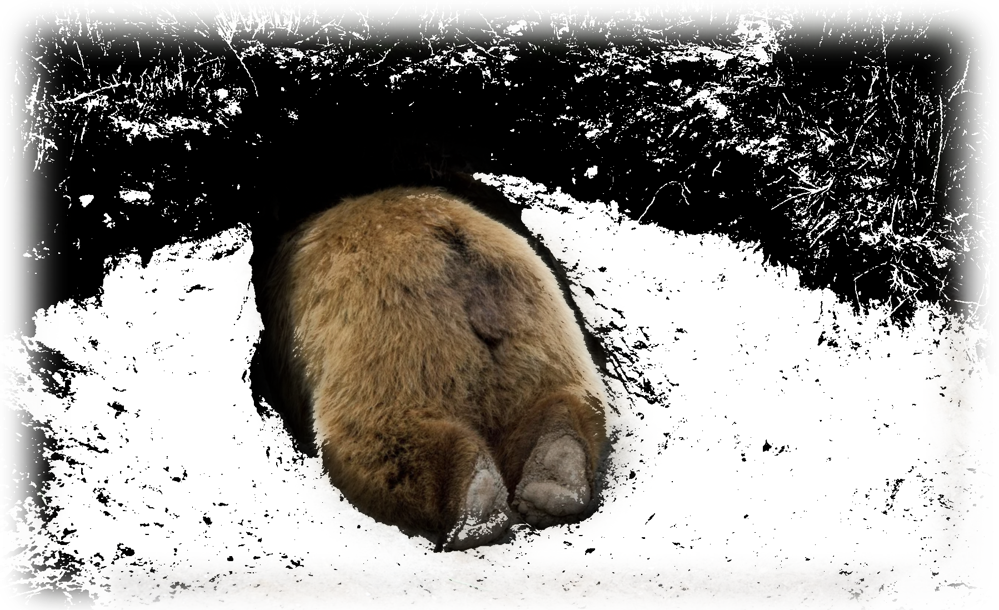

Time to Put Our Digital Consumption into Hibernation?
Research estimates that by 2025, the IT industry could use 20% of all electricity produced and emit up to 5.5% of the world’s carbon emissions.
Around 4.6 billion people use the internet every day. In fact, 350,000 tweets have been sent in the past minute. We tend to think of the internet as something ephemeral – partly thanks to terms like “web” and “cloud” – but the servers that host all that data produce huge amounts of emissions, leaving giant carbon footprints behind.
In our always-on digital world, the constant demand for connectivity and streaming consumes vast amounts of energy, casting a long shadow on our environment. This relentless digital consumption not only guzzles electricity, often sourced from fossil fuels, but also emits greenhouse gases, contributing to global warming.
In our always-on digital world, the constant demand for connectivity and streaming consumes vast amounts of energy, casting a long shadow on our environment. This relentless digital consumption not only guzzles electricity, often sourced from fossil fuels, but also emits greenhouse gases, contributing to global warming.
Look at him, he's saving energy!

Electronic devices hibernate as a survival strategy to conserve energy when resources are limited and environmental conditions become harsh. During hibernation, their activity drastically decreases, allowing them to rely on stored power reserves for an extended period. By entering a state of dormancy, electronic devices such as smartphones, laptops, and certain appliances can minimize their energy usage while enduring scarcity of power and challenging environmental circumstances
Animals hibernate as a survival strategy to conserve energy when resources are limited and environmental conditions become harsh. During hibernation, their metabolic rate drastically decreases, allowing them to survive on stored fat reserves for an extended period. By entering a state of dormancy, animals such as bears, groundhogs, and certain species of rodents can minimize their energy expenditure while enduring scarcity of food and harsh weather conditions.